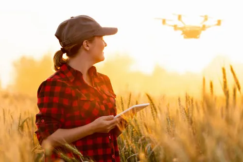
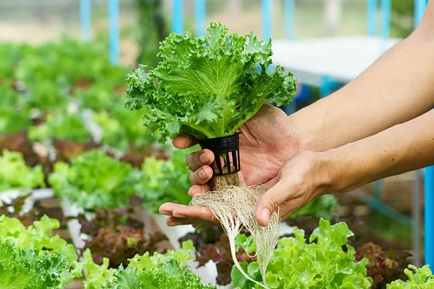

Farming Techniques

Organic Farming
Learn how to grow crops without synthetic fertilizers or pesticides to improve soil health and produce quality.
Read More

Precision Farming
Optimize resource use by using technology like GPS and sensors to increase efficiency and reduce waste.
Read More

Hydroponics
Discover the method of growing plants in water-based nutrient solutions, allowing crops to grow without soil.
Read More